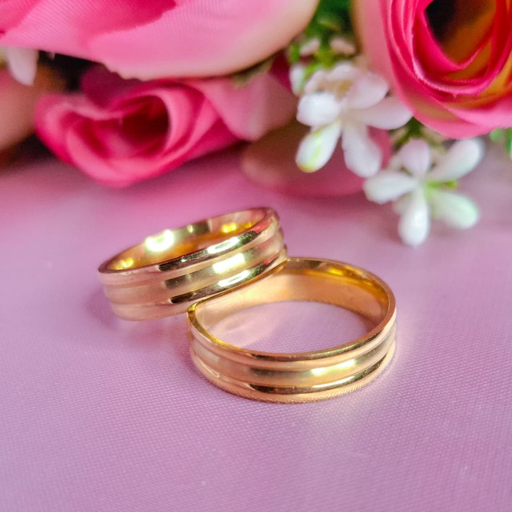

Guia completo de limpeza e conservação: ouro, prata, aço, cobre, moedas e cada tipo de peça.
Valem para qualquer joia ou semijoia do seu porta-joias — siga estas regras no dia a dia e sua peça vai brilhar por muito mais tempo.

Evite contato direto com perfume, creme, protetor solar e álcool em gel. Produtos químicos são os maiores vilões do brilho.
Retire antes do banho, da piscina, do mar e de praticar exercícios físicos. Suor, cloro e sal aceleram o desgaste de qualquer metal.
Tire antes de dormir: o atrito com o travesseiro e o lençol pode deformar peças delicadas e amassar fechos e argolas.
Seque bem após o contato com água. Use um pano macio e seco, sem produtos abrasivos, palha de aço ou escovas duras.
Guarde em local seco, de preferência em saquinho ou estojo individual — o contato entre metais diferentes acelera o desgaste.
Cada material pede um cuidado diferente. Veja o que fazer (e o que evitar) em cada um.
O quilate (k) indica a pureza do ouro na liga metálica — quanto maior o número, mais ouro puro e mais macia (e cara) é a peça.
As peças da CG Acessórios são semijoias banhadas a ouro (não ouro maciço). A tabela abaixo é uma referência geral sobre o mercado de joias, útil se você também tem peças de ouro maciço em casa.
| Quilate | Pureza de ouro | Características |
|---|---|---|
| 24k | 99,9% | Ouro puro. Cor mais intensa, porém muito macio — raro em joalheria do dia a dia. |
| 18k | 75% | Padrão mais usado no Brasil. Bom equilíbrio entre brilho, durabilidade e preço. |
| 14k | 58,5% | Mais resistente a riscos, cor levemente mais clara. Comum nos EUA e Europa. |
| 10k | 41,7% | O mínimo considerado "ouro" em vários países. Bastante resistente, menos brilho. |
Um passo a passo simples e seguro para a maioria das peças — banhadas, folheadas, prata e ouro maciço sem pedras coladas.
Separe antes de começar:
Além do material, o formato da peça também muda o cuidado necessário.
Retire para lavar louça, malhar e aplicar cremes — são os que mais sofrem atrito e contato com produtos.
Coloque por último ao se arrumar. Limpe as traseiras com frequência, onde se acumula oleosidade da pele.
Guarde esticados ou em ganchinho individual para evitar nós. Nós forçados podem quebrar elos e fechos.
As mais expostas ao atrito do dia a dia — de mesa, celular, teclado. Retire antes de tarefas manuais.
Se perceber a peça um pouco mais opaca, um paninho seco já ajuda bastante. Se tiver dúvida se é caso de garantia, é só chamar no WhatsApp e mandar uma foto.